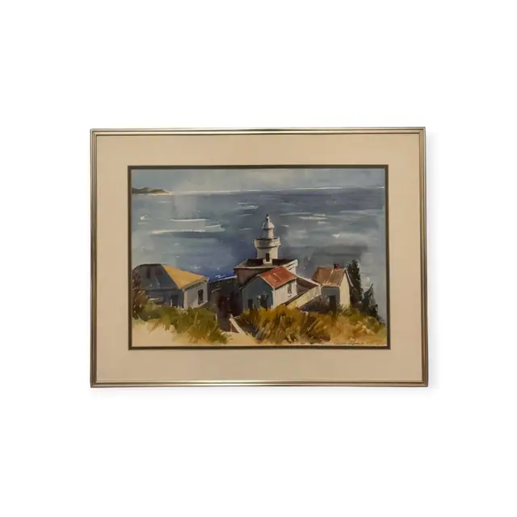
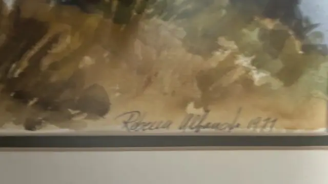
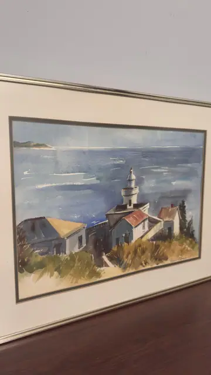
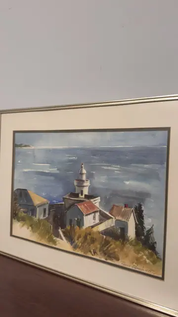
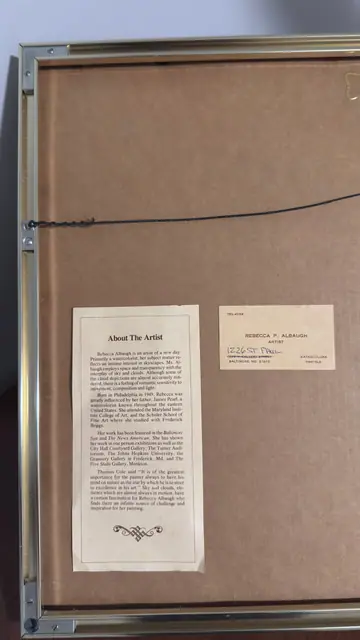

Paintings & Prints
Coastal Lighthouse Watercolour by Rebecca Albaugh, REBECCA P. ALBAUGH, Signed, Framed
Rebecca P. Albaugh · 1970s (signature dated)
Price Upon Request





About the Item
REBECCA P. ALBAUGH. A breezy coastal watercolour dominated by an expanse of streaked blue-grey sea and a soft cloud-banded sky that fills the upper half of the sheet. A cluster of low white cottages with terracotta roofs sits on a headland at the right, a slim white lighthouse tower rising among them beside a dark cypress. The foreground bank is brushed in dry ochre and olive grasses over sandy paper, and a thin pale strip of far shoreline runs across the horizon at the left. The washes are transparent and quickly laid, with white paper left for the buildings and the wave crests. It is double-matted in cream over a dark blue-grey inner mat in a slim polished silver-gilt metal frame under glass. Medium: watercolour on paper. Signed lower right within the image, in dark pencil or ink, reading "Rebecca Albaugh 1971". Inscribed on the reverse or mount: REBECCA P. ALBAUGH / ARTIST / 1226 ST PAUL (handwritten over the printed street line) / BALTIMORE, MD 21202 / WATERCOLORS PASTELS (business card taped to the backing board); About The Artist. Rebecca Albaugh is an artist of a new day. Primarily a watercolorist, her subject matter reflects an intense interest in skyscapes. Ms. Albaugh employs space and transparency with the interplay of sky and clouds. Although some of the cloud depictions are almost accurately rendered, there is a feeling of romantic sensitivity to movement, composition and light. Born in Philadelphia in 1949, Rebecca was greatly influenced by her father, James Pearl, a watercolorist known throughout the eastern United States. She attended the Maryland Institute College of Art, and the Schuler School of Fine Art where she studied with Frederick Briggs. Her work has been featured in the Baltimore Sun and The News American. She has shown her work in one person exhibitions as well as the City Hall Courtyard Gallery, The Turner Auditorium, The Johns Hopkins University, the Grannery Gallery in Frederick, Md. and The Five Stalls Gallery, Monkton. Thomas Cole said "It is of the greatest importance for the painter always to have his mind on nature as the star by which he is to steer to excellence in his art." Sky and clouds, elements which are almost always in motion, have a certain fascination for Rebecca Albaugh who finds there an infinite source of challenge and inspiration for her painting. (printed clipping taped to the backing board). Condition: Washes fresh and unfaded, mats clean; the backing board is toned brown with age and the paper clipping and card are yellowed. Hanging wire and metal frame intact.
Details
- Creator:
- Rebecca P. Albaugh
- Creation Year:
- 1970s (signature dated)
- Dimensions:
- Height: 18.5 in (46.99 cm)
Width: 24.0 in (60.96 cm)
outside of frame - Medium:
- watercolour on paper
- Period:
- 20Th
- Condition:
- Offered in the condition shown in the photographs.
- Reference Number:
- VO-148
- Documentation:
- no certificate, but a printed 'About The Artist' biography and the artist's own business card are taped to the backing board
- Gallery Location:
- REBECCA P. ALBAUGH / ARTIST / 1226 ST PAUL (handwritten over the printed street line) / BALTIMORE, MD 21202 / WATERCOLORS PASTELS (business card taped to the backing board); About The Artist. Rebecca Albaugh is an artist of a new day. Primarily a watercolorist, her subject matter reflects an intense interest in skyscapes. Ms. Albaugh employs space and transparency with the interplay of sky and clouds. Although some of the cloud depictions are almost accurately rendered, there is a feeling of romantic sensitivity to movement, composition and light. Born in Philadelphia in 1949, Rebecca was greatly influenced by her father, James Pearl, a watercolorist known throughout the eastern United States. She attended the Maryland Institute College of Art, and the Schuler School of Fine Art where she studied with Frederick Briggs. Her work has been featured in the Baltimore Sun and The News American. She has shown her work in one person exhibitions as well as the City Hall Courtyard Gallery, The Turner Auditorium, The Johns Hopkins University, the Grannery Gallery in Frederick, Md. and The Five Stalls Gallery, Monkton. Thomas Cole said "It is of the greatest importance for the painter always to have his mind on nature as the star by which he is to steer to excellence in his art." Sky and clouds, elements which are almost always in motion, have a certain fascination for Rebecca Albaugh who finds there an infinite source of challenge and inspiration for her painting. (printed clipping taped to the backing board)